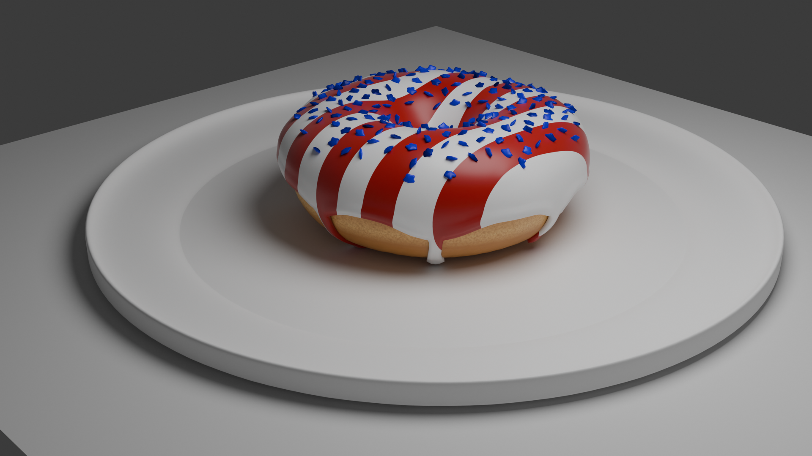

Game Design
3D Donut
Blender · 3D Modeling
My take on the classic Blender donut tutorial, but with a 4th of July twist featuring red, white, and blue icing. This project was my introduction to Blender's node-based workflow. I spent considerable time perfecting the icing drips using physics simulations and getting the sprinkles to look realistic with particle systems. The challenge was balancing the whimsical patriotic theme while maintaining photorealistic materials. Learned shader nodes, Cycles rendering engine, and proper lighting techniques using three-point lighting setups. The final render took about 45 minutes per frame, but seeing that glossy icing with proper subsurface scattering made it worth the wait.